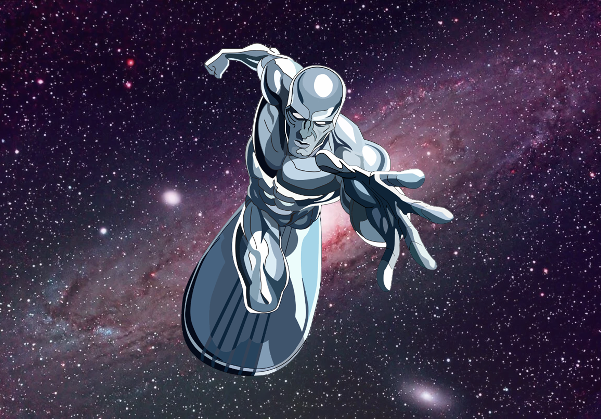
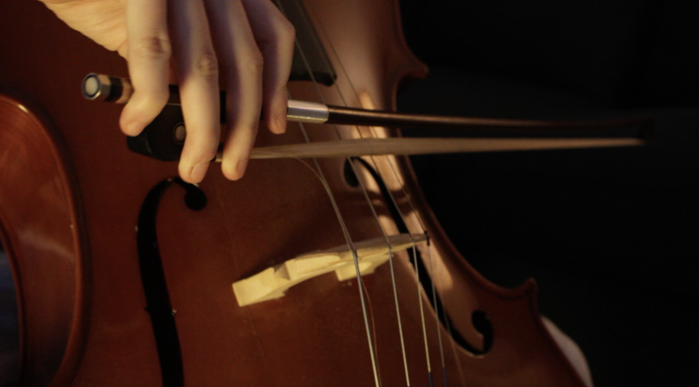

view My Work

Graphic Design
A collection of visual work exploring layout, typography, and illustration, with a strong influence from sci-fi and cinematic design. This section highlights posters, branding concepts, and creative experiments that showcase both technical skill and artistic voice.
View Designs
Web Development
A selection of responsive, interactive web projects built with modern front-end technologies. These pieces focus on clean code, thoughtful user experience, and engaging animations, demonstrating a balance between design sensibility and technical execution.
View Sites
videography Channel
A showcase of video projects focused on storytelling, pacing, and visual composition. This section features edited short films and creative videos that demonstrate an eye for narrative, mood, and detail across different formats.
View Videos